Glean Agents are a comprehensive platform feature designed for building, orchestrating, and managing AI agents within enterprises, aimed at scaling AI adoption across various business operations. They enable users to create personalized agents using natural language and offer a library of pre-built agents that can be tailored for specific tasks. Glean Agents operate using an agentic reasoning engine that supports complex workflows driven by company data and external information. This platform not only facilitates the construction of agents but also incorporates governance measures to ensure data security and compliance, making it a strategic tool for enhancing productivity and automating processes across departments.
In this lab we will:
- Explore an existing agent including learning how to extend it.
- Create a Q&A Chatbot Agent
- Build an Agent from Scratch
Go to https://app.glean.com/chat/agents.
Because Glean is a logged in experience and this is the first time you've accessed the platform, you will be redirected to the glean login page.
Enter the credentials provided for you by the Workshop Moderator. First enter the email address and click the "Log in" button.
You will be presented with a screen similar to the following. Enter the password provided by your Workshop Moderator and click the "Sign in" button.

You will then be redirected back to the Glean Agent Library.
This Public instance of Glean has various pre-populated agents. For the purposes of this workshop we will explore the Plan My Day Agent.
Click the Plan My Day Agent card.
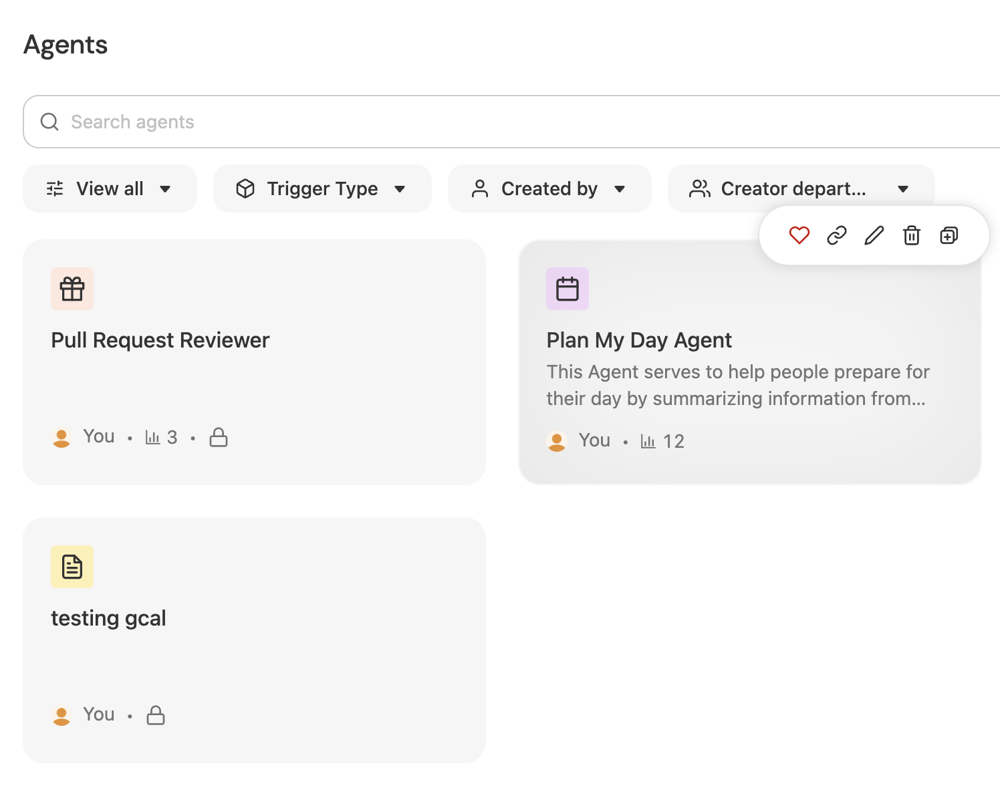
In the Popup Window select the View agent setup link to see the design of this agent:
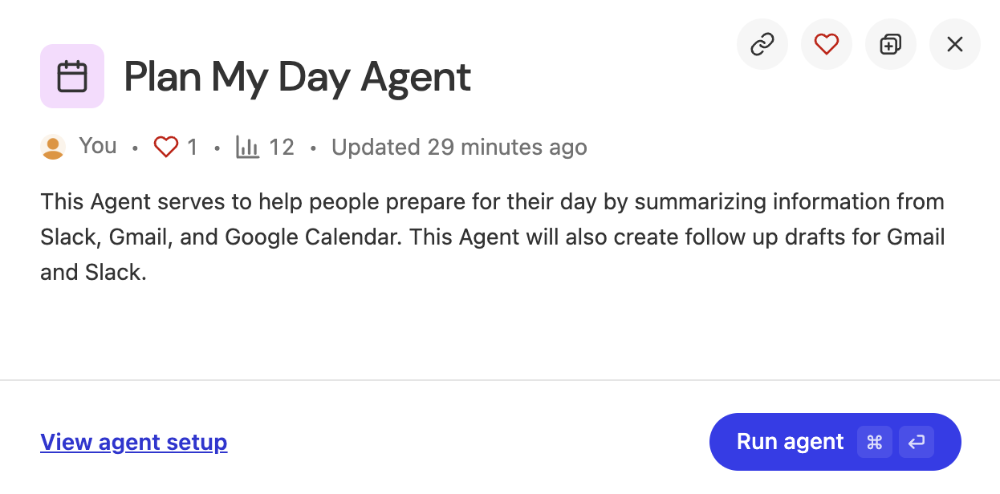
Use your mouse to navigate the Plan My Day Agent canvas. Notice how you are able to add sticky notes to the canvas from a documentation perspective as well as able to see this Agentic Workflow's Series of steps.
| Step 0: Defines how this Agent is Triggered |
Step 1: Search Slack for messages where I was tagged yesterday | |
Step 2: Search for content that could assist in answering questions that were asked of me in the Slack Messages found | |
Step 3: Perform an email search for all emails from yesterday and today | |
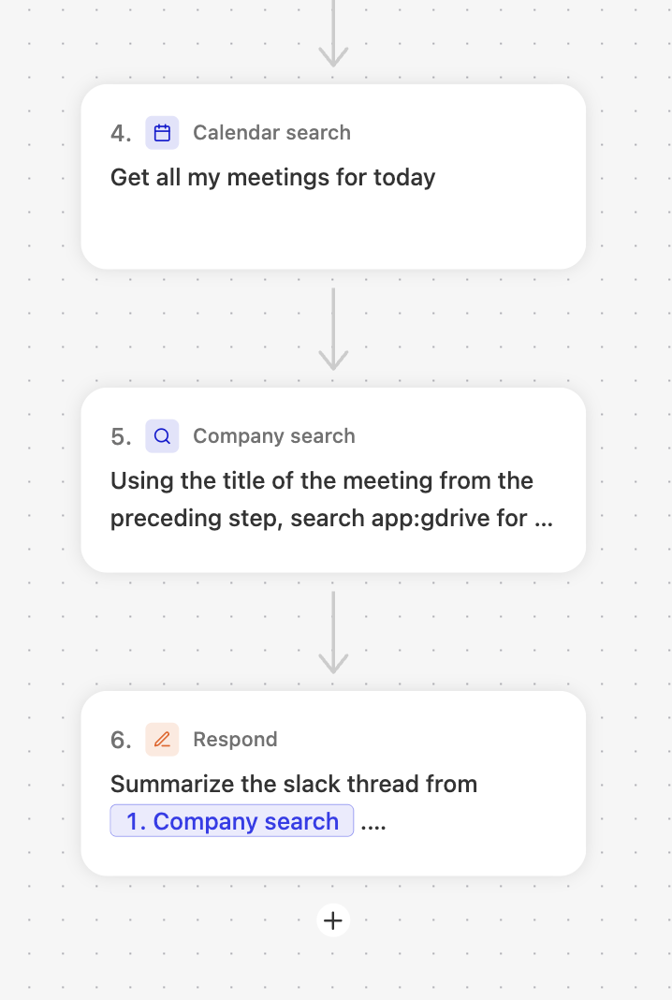 | Step 4: Execute a Calendar search to find all of my meetings scheduled for today |
Step 5: Search for meeting notes from previous meetings that have a similar title | |
Step 6: Respond to the user with all of the information desired in order to plan the user's day. |

As you can see, the author has control over the formatting of the response including adding additional instructions for the Reasoning engine to assist in the output. Note the Markdown syntax for the response formatting. While this is not required, it can be helpful since LLMs deeply understand the Markdown syntax.
Let's now execute this agent directly from the Design Canvas. Click the 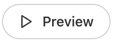button in the upper right corner to expand the test window on the left side of the screen as shown:
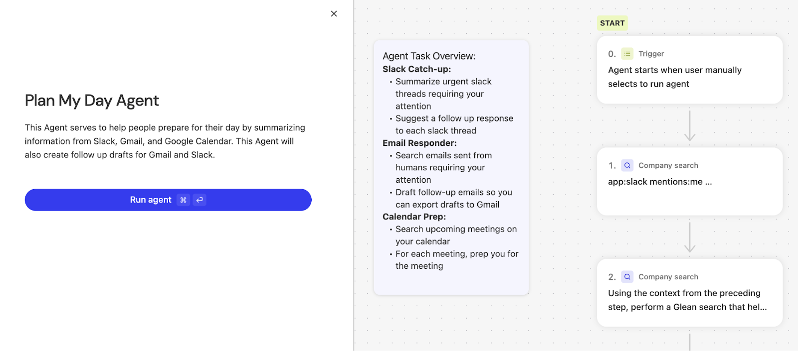
Click the Run agent button to execute.
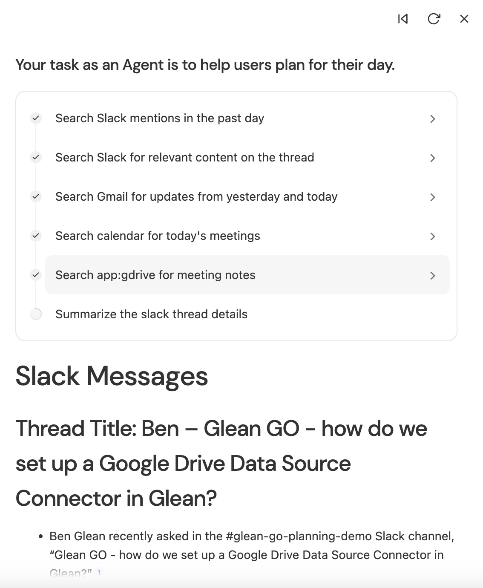
Follow the output similar to what you see on the right:
The above example could be beneficial as an Agent that runs automatically on a scheduled basis in the morning before you start your day. The message could be fed automatically to Email, or your company's messaging program (Teams, Slack, etc...)
Think about how you extend this Agent to drive additional value (Look for only unread Slack/Email messages..).
Close the Navigate back to the Agent library by clicking the left arrow next to the title of the Plan My Day Agent as shown:
You can also navigate directly by going to https://app.glean.com/chat/agents, or by navigating the Glean Menu via this path: Chat > Agents.
Click the  in the upper right corner of the screen. This will open up the Create agent popup window as shown:
in the upper right corner of the screen. This will open up the Create agent popup window as shown:
Feel free to look around at all of the Templates provided by Glean to jumpstart the build. There is also the ability to create an agent by describing the agent intent in Natural Language (Use AI to generate a draft).
For the purposes of this Agent, we will use the template called Q&A Chatbot. Click that Template Card.
This will generate a new Agent with a Canvas that looks similar to the following:
| Step 0: The trigger to execute this chatbot, which in this case is the user entering a natural language question or phrase. |
Step 1: A Plan and execute steps Action. This Action allows the Author to specify Knowledge Sources used in answering the natural language questions from the user. |

Modify the name of this Agent. Click the pencil icon in the upper left corner next to the default name to modify it as shown:
In the popup window fill out the Agent name.
Call this Agent:
[Your Name] HR Q&A Chatbot
Replace [Your Name] with your actual name. This will allow us to differentiate all of the users in this workshop (Since we are sharing a login to the public sandbox environment). An example is as follows. Feel free to modify the Description if desired as well.
Click the 0. Trigger Card to configure this Step. We are going to add a couple of conversation starters to provide the user some sample questions to use to kickoff the conversation.
Click the 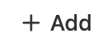button under the Conversation starters.
For the Conversation starter label type in:
Request PTO Balance
In the Write prompt box enter the following:
How much paid time off do I have left?
Your Conversation starter prompt should look similar to the following:
Add one more conversation starter with the label: Leave Policy and the prompt of: What are our leave policy options?.
Select the 1. Plan and execute steps Action card to open the configuration. We are going to switch this Step to a Branch Action. Click the  button to switch the action.
button to switch the action.
In the Select Step search bar enter Branch and select the Branch Action as shown:
In the Branch conditions section of the configuration enter the following text in the Choose this branch if... prompt window:
the user requests their PTO, paid time off, or vacation balance. They also may request how much PTO, paid time off, or vacation they have left. Do not select this if the user inquires about other types of leave.
The configuration window should look similar to the following:
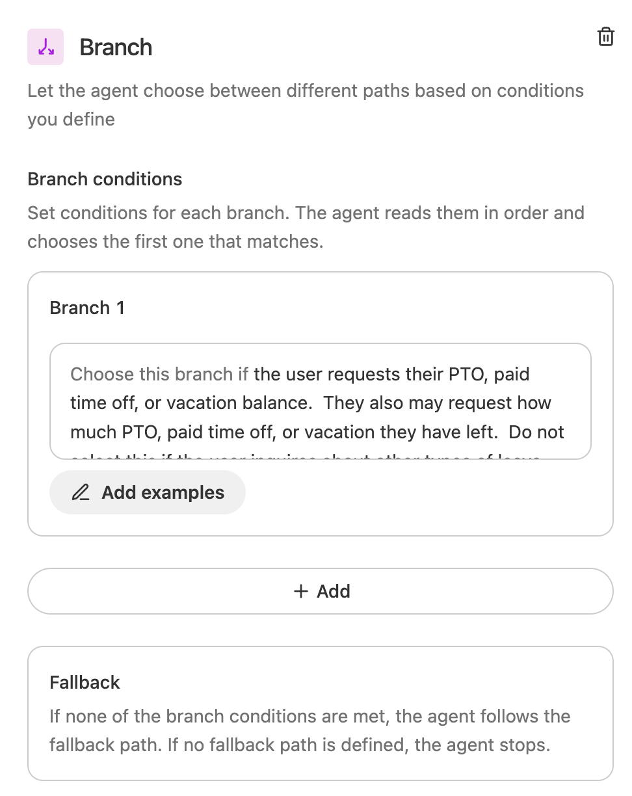
Click the Plus icon under the Fallback branch as shown:

Enter Plan in the Select step search box as shown and select the Plan and execute steps Action.
In this next step, we are going to create the Instructions and select the Knowledge Sources desired to serve HR related requests.
In the Plan and execute steps Action, enter the following instructions in the Instructions text box.
You are a helpful assistant. Please be factual and use a kind tone in your answers. If the content does not contain the information requested from the user, tell the user to reach out to hr@dummyco.com.
Click the text box in the Company search section to instantiate a search for indexed content that will be used to answer the user's questions.
Type in gco and click the See all results for "gco" link at the bottom of the search.
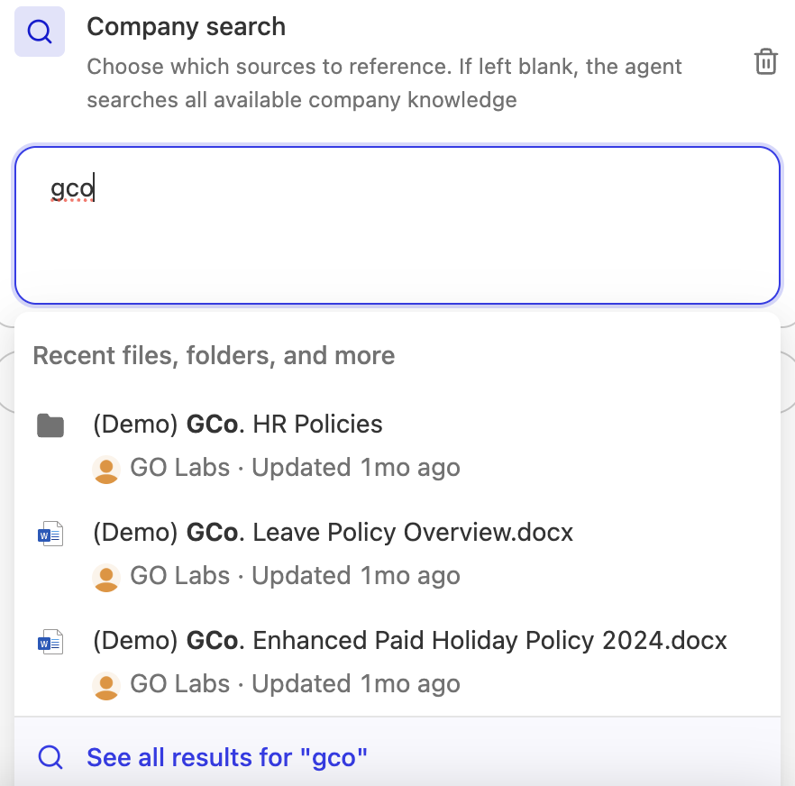
In the Add a knowledge source popup window, hover over the (Demo) GCo. HR Policies folder and click the Add Item button as shown:
Click the X button in the upper right hand corner of the popup to close the search window.
Your Plan and execute steps Action should look similar to the following:
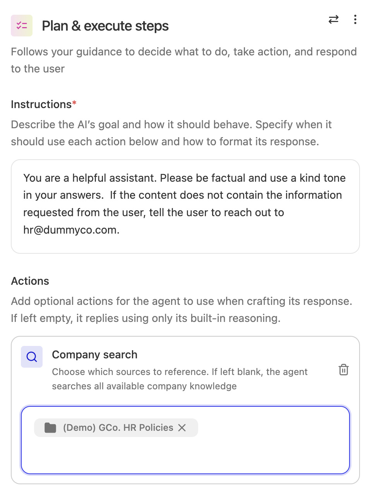
Now let's configure the Steps under the Branch if the user inquires about PTO. In the Design Canvas click the Plus icon under the first Branch here:

In the Select Step search box, enter workday and select the Workday: Get PTO Availability Action as shown.
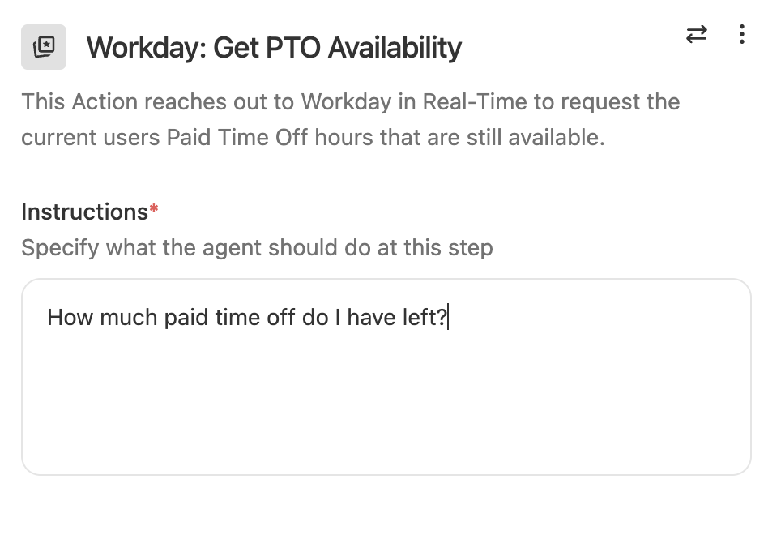
This is a Custom Action registered in this Glean instance. As you can see this Action makes a real-time callout via an API to retrieve the users PTO Balance.
Enter How much paid time off do I have left? In the Instructions window of the Workday: Get PTO Availability Action configuration screen.
Now that we have received the Paid Time Off Balance for the user, we will need to respond to the user with the information.
Underneath the Workday: Get PTO Availability action, click the Plus icon to add a step.
Search for and select the Respond Action.
In the AI response instructions text box, enter:
Tell the user their Paid Time Off Balance.
Add another line of text to these instructions:
Respond with all balance options in a bulleted list.
Your Respond Action should look similar to the following:
Our new HR Q&A Chatbot is now complete! Click the  button in the upper right hand corner.
button in the upper right hand corner.
Now it's time to test! Click the 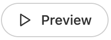button in the upper right hand corner to open the test harness window.
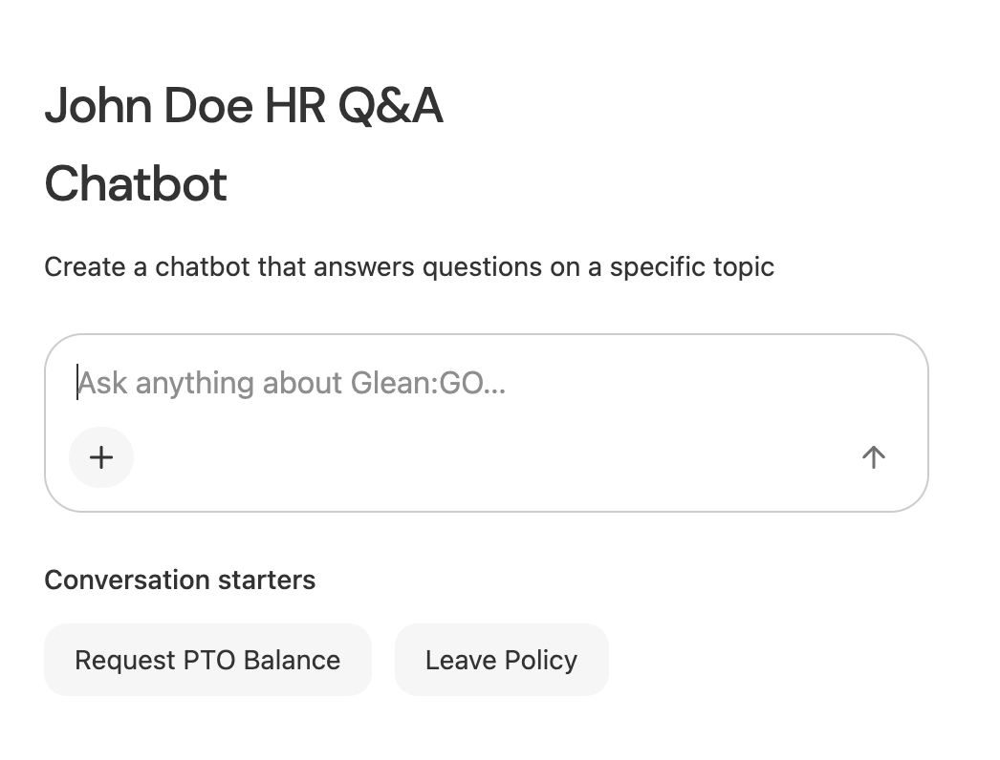
You can see that Conversations starters can be used to pre-populate the Chat window with the text specified in the configuration.
Feel free to try both conversation starters and/or ask any question of the new Chatbot.
If you ask about Paid Time Off or use that conversation starter, the Chatbot should call the Workday: Get PTO Availability Action. Otherwise the questions should be answered directly from the content within the (Demo) GCo. HR Policies folder.
Note: At any time during testing, you can reset the test harness by clicking the  icon in the upper right corner of the harness.
icon in the upper right corner of the harness.
It's now your opportunity to build your own agent based upon what you've already learned. Pick one of the two options below. And if you have time, build both 🙂. Let's see what you can come up with. If you get stuck at any time, or just need a nudge to get started, flag down one of the Glean Staff to get some assistance.
Notes before you build:
- Remember, this is a Public Sandbox environment and therefore the amount of data indexed and available is fairly limited. This should not diminish your ability to build out an interesting Agent though.
- When you create the Agent, be sure to put your name as part of the Agent name so there are no conflicts with other workshop participants.
Option 1: Pull Request Reviewer Agent
The purpose of this Agent will be to analyze a Pull Request in GitHub. It should assist the analyzer in understanding whether the pull request is ready to be merged or whether it should be sent back to the engineering team to resolve.
As part of the analysis, it should look at the published Style Guides available in this Sandbox instance to check adherence of any changed code against the guides. You can find these guides by searching for style guides in Glean Search (Home menu option).
Since this is a Public Sandbox instance, we don't have a ton of Pull Request to test your Agent against. However, here are a couple pull request links you can test against:
- https://github.com/glean-go-demo/mcp-server/pull/5
The above should show a Typescript Change that is non-concerning (just some config changes)... - https://github.com/glean-go-demo/mcp-server/pull/6
The above has some code changes that should be concerning...
Hint: In order to read the Diffs of the Pull Requests, you will need to take advantage of one of Glean's out-of-the-box Actions for GitHub called: GitHub PR Diff Fetcher. It may also be interesting to branch for each language the style guides are evaluating...
Option 2: Support Issue Resolver Agent
The purpose of this Agent is to resolve a customer issue by generating actionable next steps to debug. The support agent will enter a natural language issue into the Agent to kick it off. The agent should look for information in Confluence, Jira, Google Drive, and the Glean Docs website. It should then take the knowledge it found and provide a response to the user on a suggested means of resolving the issue at hand.
As this is a Sandbox Environment we don't have access to a vast library of Knowledge Base Articles and closed Support Incidents, however there is some documentation that can provide value for a couple of issues. Try out the following two inputs to the agent after you've completed your agent build:
- sharepoint credential error
- servicenow indexing problem
Hint: It may be helpful to use the Company search Action with Manual search queries selected. This allows for specified search queries and also allows for multiple individual searches to be executed as part of the single action. An example of a couple of these manual searches might be:
Throughout this lab, we explored the capabilities of Glean Agents as a robust platform for building, orchestrating, and managing AI agents within enterprise environments. Participants engaged hands-on with pre-built agents, extended their functionality, and progressed to creating custom agents from scratch. Key steps included analyzing the Plan My Day Agent's multi-step workflows, developing a Q&A Chatbot tailored to HR policies, and using branching logic and external data integrations—demonstrating how Glean Agents facilitate personalized automation while maintaining compliance and data security. The structured walkthroughs and practical exercises illuminated the flexibility and utility of Glean's agentic reasoning engine in automating complex, data-driven tasks across different business functions.
As a final step, the lab encouraged creative application through a hackathon—where users synthesized their learnings to design and implement agents for real-world challenges, such as pull request review automation or support issue resolution. Although the sandbox environment featured limited data, the exercise highlighted Glean Agents' adaptability and potential to drive operational efficiencies and streamline decision processes. Moving forward, leveraging these foundational skills and the Glean platform's extensibility, users are well-positioned to address a broad range of enterprise automation scenarios, further enhancing productivity and innovation within their organizations.